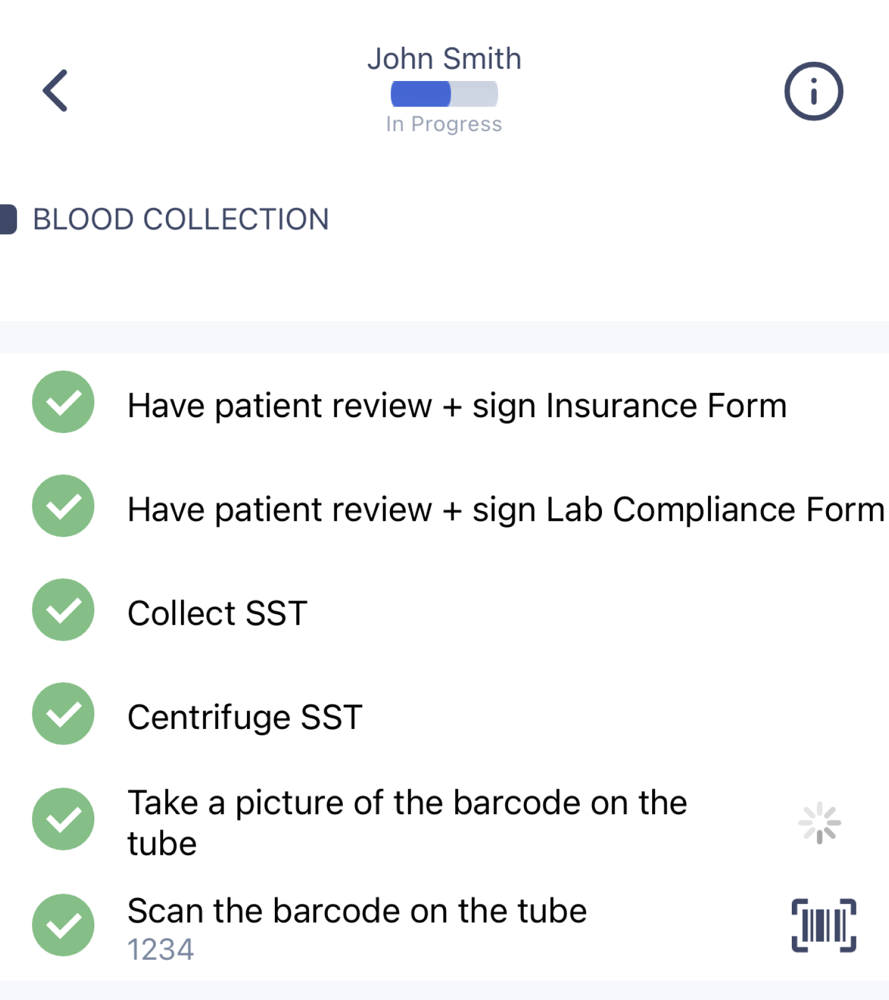
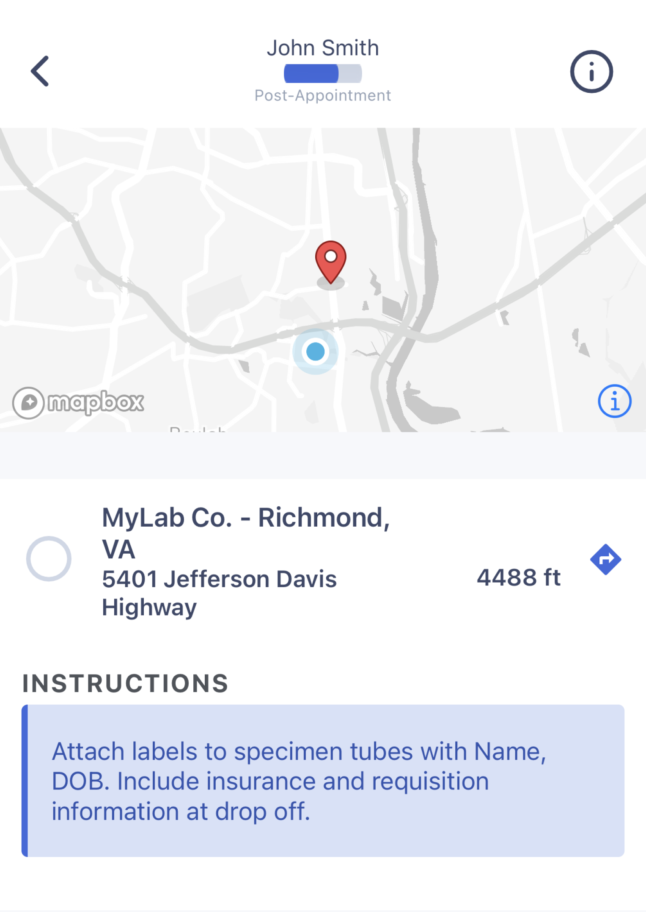
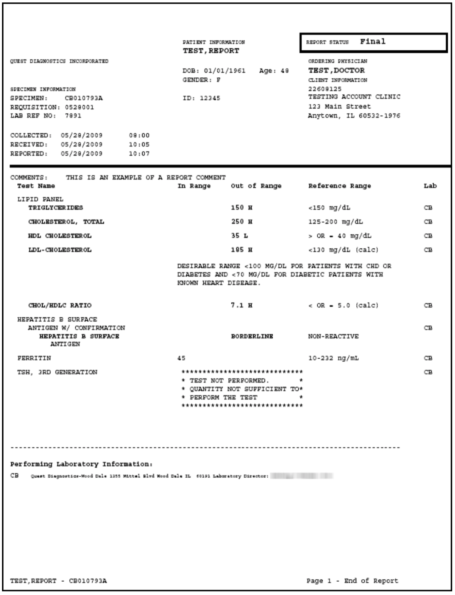

Workpath Housecall API
The path connecting telehealth and in-home healthcare.
Workpath is your touchpoint to invaluable information for your
patients. Workpath
-
Takes your request and turns it into an in-home patient
appointment.
-
Sends a specialist to your patient’s home to collect the
specimen you requested who then delivers the specimen to the
lab.
- Delivers the lab results straight back to you.
At every step of the experience, we keep in contact with you,
your patient, and the lab to ensure everyone has the right
information at the right time.
Before we can get started, reach out to us to make sure you have
your lab account setup with Workpath as a lab partner for
sending orders and receiving results.
Read on to see what you can expect from us as well as a little
bit about what the patient experience will be like.
2 Submitting your request
When Workpath receives a request from you, it looks for three
groups of information:
-
Your Company Information: Your ID, account number for your lab
partner, name/NPI of the Provider requesting the test, the
unique identifier you use for your patient who needs the test.
-
Your Patient’s Information*: First/Last Name, Phone #, DOB,
Email, Address, and Gender.
-
What Test You Are Requesting: an ID, ICD codes that were
assigned, and any documents or notes you need the field
specialists to have.
*The next step below will confirm this information directly with
your patient so if you are unsure of some of the fields or their
accuracy, do not worry, we will grab that for you! We require an
accurate phone number for logistics updates.
In your request, we asked you to provide as much information on
your patient as possible. Here’s what happens next:
-
We contact the patient to fill in any missing contact info.
-
We ask the patient for self-payment or insurance information
which is then sent to the lab for billing purposes (Policy
Number, Group Number, etc.).
-
We ask the patient what day works best for their appointment and
recommended times based on the availability of our specialists
in the area.
Workpath also makes sure to inform the patient about any needs
from the test they will be taking (ex. If they need to fast).
Once we’ve received all of the required information from the
patient, we’ll order the test for the patient from our lab partner
and schedule the appointment for the patient’s in-home visit.
First, we’ll look for the next available time for a specialist who
is certified to complete the test, has availability in that area,
and who can tackle the appointment the soonest.
Once a specialist claims the appointment and confirms that they
can complete the specific test for that patient at that location,
the patient will receive a text message confirming the date and
time of their appointment, and information on their specialist.
In addition to the patient receiving a confirmation, you will
receive a response including the created appointment’s ID,
information on the specialist, the status of the appointment, and
other information on what to expect from the appointment.
If there are unforeseen circumstances including bad weather,
illness, or supply issues and the specialist has to reschedule or
release the appointment to another specialist, both you and the
patient will be updated immediately.
You and your patient are sent messages as it gets closer to
appointment time. Your patient is sent reminders and you are
sent confirmations that the specialist has all necessary
equipment and are ready for the appointment.
On the day of, your patient will receive an SMS message letting
them know their specialist is on the way that includes a link*
to help track their specialist en route to their home. We’ll
also include links* for any support calls or questions for the
patient.
When the specialist has arrived, the patient will receive an SMS
message notifying them. The specialist will introduce
themselves, confirm the patient’s information, and start the
appointment.
*The tracking experience and support lines will reflect your
brand, the touchpoint they’re familiar with.
Image: text and UI
6 Completing the Appointment
Workpath provides a mobile app to the specialists that
highlights the steps they need to take to complete the
appointment - such as information that they may need to gather
from the patient. These steps are pre-determined based on the
test that you requested.
During the in-home visit, the specialist will ask your patient
to complete a few forms for the lab to confirm their
information, self-payment or insurance eligibility, and the test
being performed. These will be delivered to the lab along with
any specimens taken.
Once the specialist has finished all of the steps with your
patient, they will mark the appointment as complete, sending a
text message to your patient and an update to your system.

After the specialist marks the appointment as complete, the
mobile app prompts them to either ship the specimen to the lab
or deliver it to a nearby location. This is part of the
predetermined steps mentioned earlier.
You are notified once the specimen and patient forms are either
shipped or dropped off.

Once the lab receives the specimen and patient forms, they
perform the requested tests and then send us the results file.
What Workpath does for you here is take the large, difficult to
parse HL7 file returned by the lab and only sends you the PDF
overview that is included.

From that point, you can work with your patient on what’s next,
and we’ll be ready for your next in-home appointment only one
API response away.